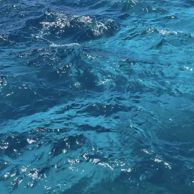

#1 · wufantouzi · 2026-07-03T16:01:51.000Zousd这种“夸大虚假宣传”行为恰恰说明了他们做不了做不好稳定币信任才是稳定币的基石你连最基础的信任都不具备怎么让用户把钱交给你然后你给我一个tokencrcl因为这样的新闻大跌了20%随着时间推移会慢慢涨回来的只不过是空头利用的机会真多头也可以利用抢到割肉的带血筹码
#7 · Kunn6666 · 2026-07-03T17:41:11.000Zousd又不会登陆美股。买crcl核心逻辑说来说去只有一个。它是一个 “流动性巨大的新山寨币”crcl先登陆美股不就是因为它处于劣势地位 要抢险登陆 卖个好价格给韭菜们吗？从不分红 无线增发。底层逻辑还不如代码公链。即使连年亏损也会在btc牛市中暴涨的。70以下 买crcl博弈的点其实就是原始股东罪恶增发。
 #8 · Reshape_98 · 2026-07-03T16:53:13.000Z对于消费者来说，甚至企业和投资者来说，稳定是第一要义。QuoteJul 1Replying to @PhyrexNi and @Michael_Liu93看到公告反而觉得麦总说的更有说服力一点，140+根本就不是为了改变格局而来的，他们看中的更多是利益和分红，当然USDC也是为了赚钱，但名誉已经打出来了，一个钱庄开遍世界和140个钱庄联合开遍世界，我更会因为1个钱庄的名誉去存钱，而不是选择140个各有心思钱庄主。倪老师讲的也很好，感谢你们的辩论
#13 · luckybibiw1p · 2026-07-03T16:07:35.000Z信任确实是稳定币的命脉。没有存款保险也没有央行兜底，一旦市场开始怀疑，赎回挤兑就是一瞬间的事。OUSD这次是信誉崩塌，不是价格波动。CRCL跟着跌20%更像是恐慌情绪溢出，空头趁机砸盘，但基本面没变的话，这个坑很快会被填上。真多头现在盯着的是带血的筹码。
#17 · JamesMeng007 · 2026-07-03T16:41:13.000Z信任是稳定币的充分必要条件，ousd尚未发行已经在信任方面丢分了，对于机构/银行这些风控和审计要求极其苛刻的行业来说更需要谨慎采用了。我觉得stripe 和open standard的营销策划部门水平也太差了
#19 · Wallstreet_bnb · 2026-07-04T12:47:31.000ZIt looks like Binance still has the better long-term vision.